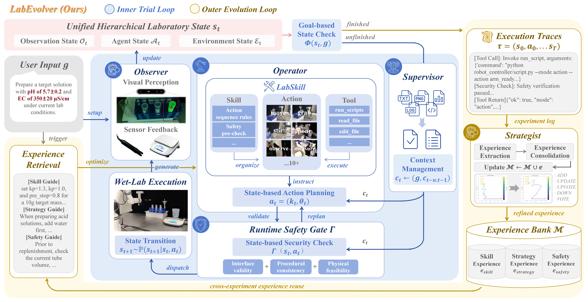
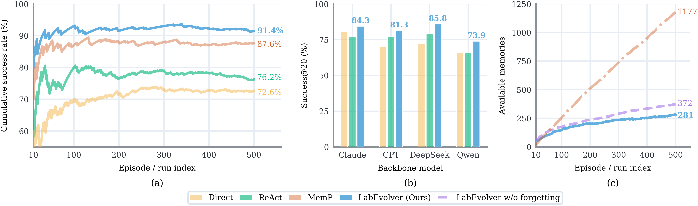
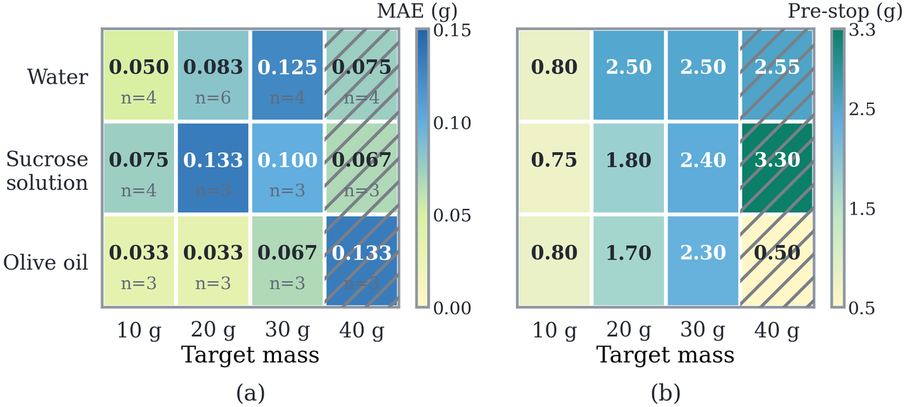
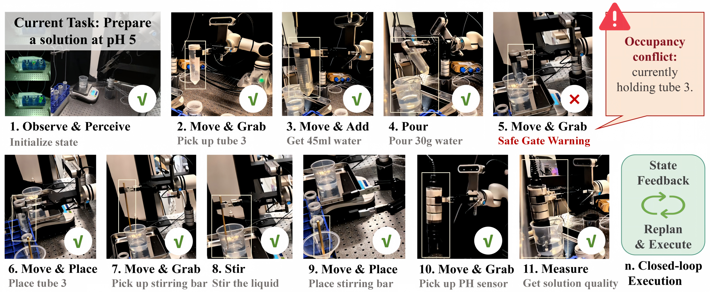
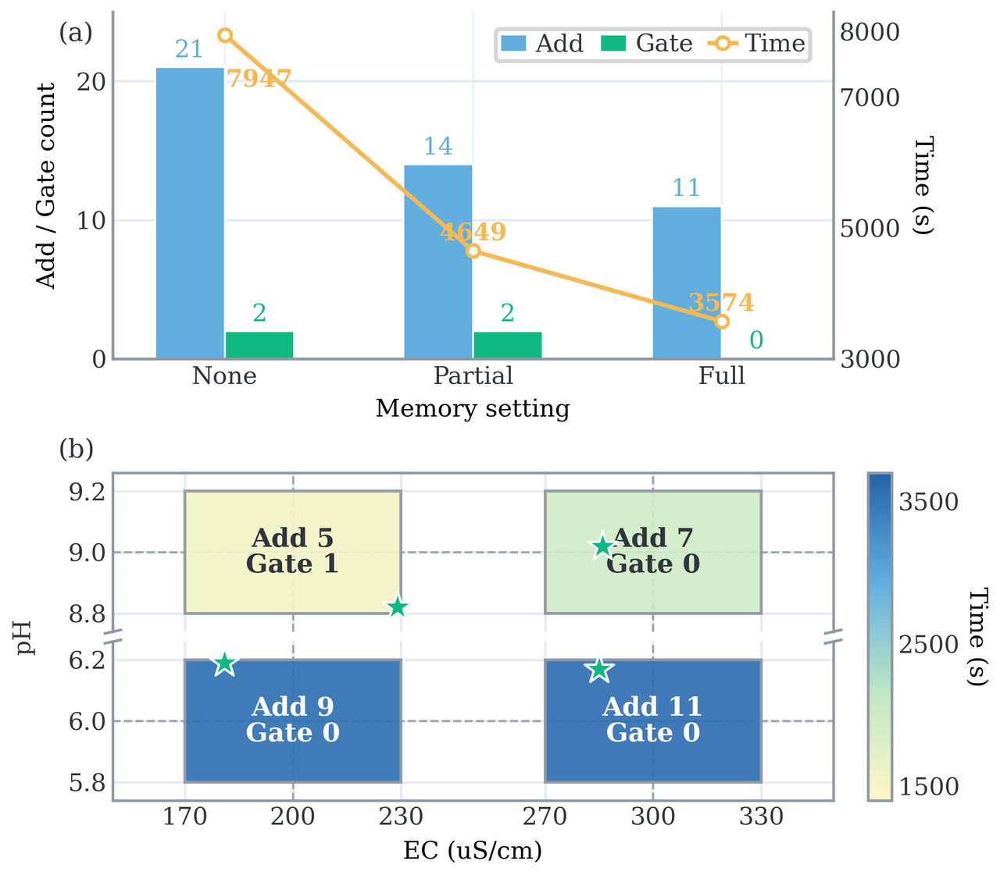

Toward automated scientific discovery
From state-valid control to learn-by-doing autonomy
Autonomous laboratories should accumulate episodic memory from concrete operations so that planning, cognition, and action improve together through practice. LabEvolver operationalizes this capability through a nested dual-loop process.
Nested dual-loop framework
State-grounded execution. Experience evolution.
Inner Trial Loop
The Observer builds a hierarchical state from visual, sensor, and actuator feedback. The Operator maps goals to parameterized LabSkill actions, while a tri-layer safety gate checks interface validity, procedural consistency, and physical feasibility before dispatch.
Outer Evolution Loop
The Strategist converts completed execution traces into state-paired skill, strategy, and safety memories. Add, update, upvote, downvote, and forgetting operations keep retrieval useful and the memory bank bounded.

Scalable embodied decision making
Experience improves decisions without memory explosion
Across 500 continual ALFWorld tasks, LabEvolver reaches 91.4% cumulative Success@20—15.2 points above ReAct and 3.8 points above MemP. The advantage generalizes across Claude, GPT, DeepSeek, and Qwen backbones.

Training-free
All gains come from test-time execution experience; model weights remain fixed.
Backbone-agnostic
LabEvolver delivers the highest Success@20 for every evaluated backbone.
Bounded memory
Consolidation and forgetting prevent unbounded context growth while retaining useful experience.
Physical validation
Safe, adaptive execution in the real wet lab
The physical platform combines a RealMan RM75-B arm, EG2-4B gripper, Intel RealSense D435 RGB-D camera, electronic balance, and water-quality meter. We evaluate quantitative pouring, single-objective pH regulation, and coupled pH–EC regulation.
Quantitative pouring
Across water, sucrose solution, and olive oil at 10–40 g targets, 41 of 43 validations fall within ±0.2 g. On 20 g water, LabEvolver achieves 0.083 g MAE in 11.179 s.

pH regulation
State feedback drives replanning after every measurement. The safety gate intercepts invalid transitions before physical dispatch, while retrieved experience reduces exploration: a repeated pH 5 task reaches pH 4.88 with only two additions.

Coupled pH–EC control
Full task-relevant experience reduces additions from 21 to 11, completion time from 7,947 s to 3,574 s, and gate intercepts from 2 to 0. The system reaches all four evaluated pH–EC target regions.

| Evaluation | Setting | Key result | Outcome |
|---|---|---|---|
| ALFWorld | 500 continual tasks | 91.4% cumulative Success@20 | Best overall |
| Pouring | 3 liquids × 4 target masses | 95.3% within ±0.2 g | Transfers |
| pH regulation | pH 5 across 3 backbones | 2.33 mean additions with LabEvolver | Robust |
| pH–EC regulation | 4 coupled target regions | 8 additions on average | 4/4 reached |
Experiment video
Watch the system execute
The original annotated experiment video is preserved. It shows physical operations, sensor feedback, safety-aware execution, and closed-loop convergence.